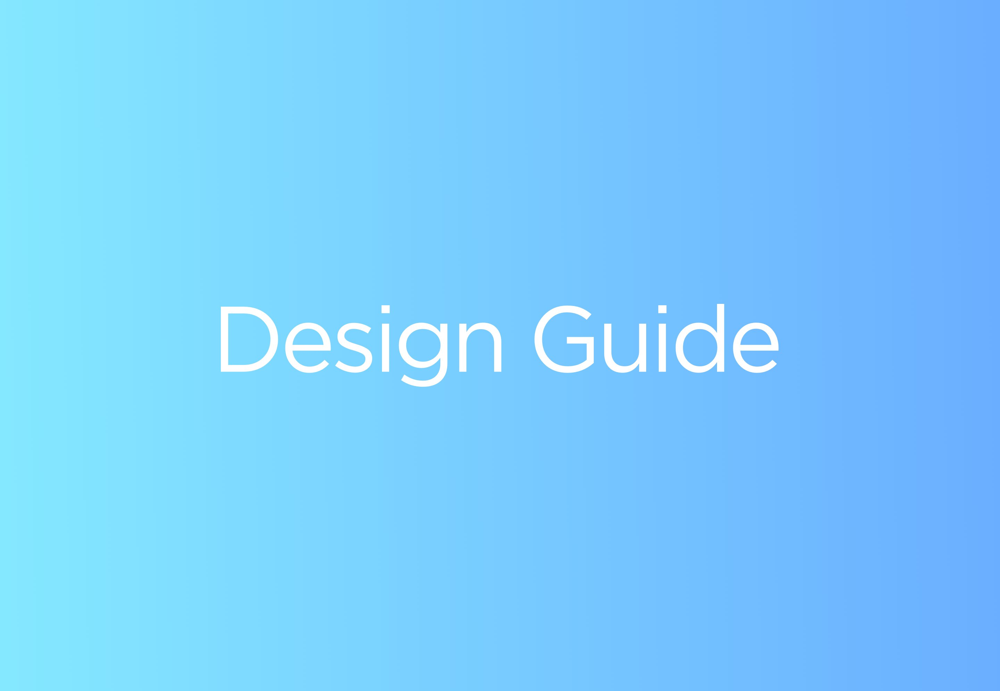

Design Guide
Гайд по передаче макета от дизайнера разработчику.
Проблема
Проект нацелен на решение проблемы взаимодействия дизайнеров и разработчиков. Задача проекта разработать общие требования к дизайн-макетам с целью оптимизации процесса передачи в разработку. Проект нацелен на решение проблемы взаимодействия дизайнеров и разработчиков. Задача проекта разработать общие требования к дизайн-макетам с целью оптимизации процесса передачи в разработку.
Целевая аудитория
Целевая аудитория проекта — это независимые дизайнеры и разработчики, в том числе начинающие, а также небольшие дизайн команды, в которых отсутствуют внутренние требования и гайды. Помимо прочего проект может быть интересен всем занятым в данной сфере как инструмент для дополнительного образования.
Решение
Решением станет некоммерческий образовательный проект. Набор сформулированных правил от экспертов области.
1-й этап. Предрелизный промо.
Разработка бренда будущего продукта и лендинга, рассказывающего о целях и задачах проекта. Задача этапа привлечь внимание аудитории и экспертов области на начальном этапе разработки.
2-й этап. Разработка и релиз.
Сбор и систематизация информации от экспертов, соединение ее с личным опытом рабочей группы. Создание дополнительных графических материалов для иллюстрации материала. Итогом этапа станет запуск сайта с изложением всего собранного материала.
3-й этап. Долгосрочный.
Проект планируется как open–source. Весь материал будет доступен для просмотра, изучения и внесений изменений, что позволит пользователям принять участие в доработке и исправлении ошибок. Задача рабочей группы следить за реакцией аудитории, обновлять и совершенствовать продукт.
Риски
Из-за чего проект может не состояться?
Команда
В основную рабочую группу проекта входят Захар День, Куприянов Александр, Залесова Анастасия. Дополнительно планируется привличение экспертов области.